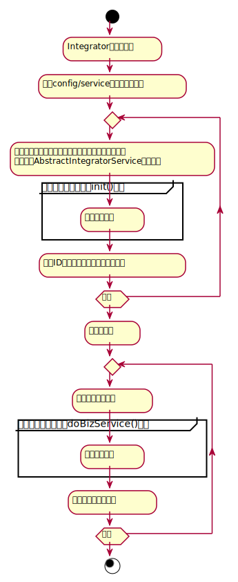
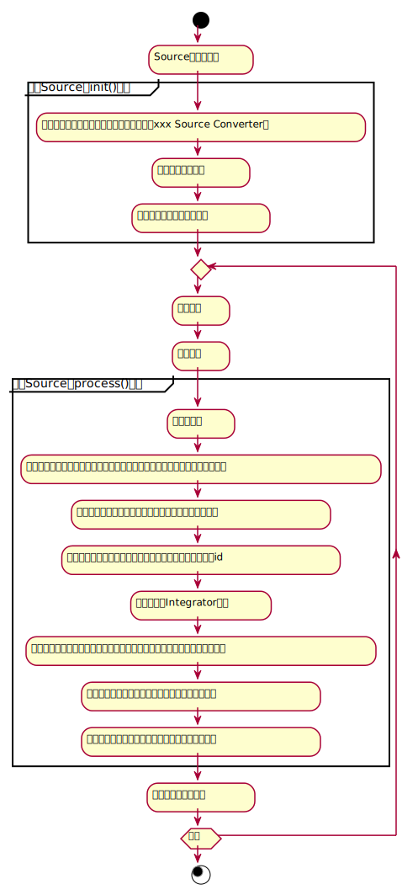
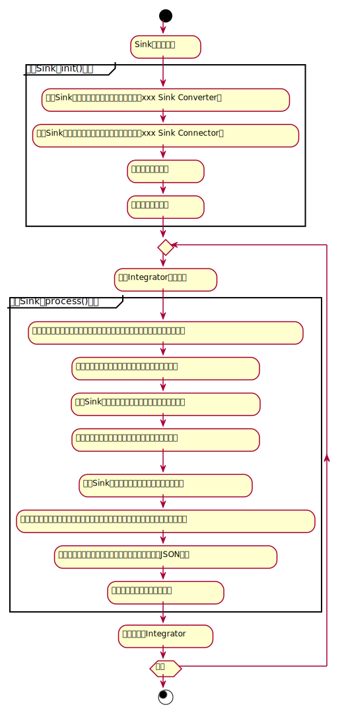

扩展开发
介绍对Biz-SIP中间件模块进行增加类型和扩展功能的进阶开发。
一、应用层App Integrator
1 Script服务整合器脚本函数的扩展
Script服务整合器是构建在magic-script脚本解析器基础上的服务编排引擎，通过解释执行service目录下的*.script文件，实现内外部服务整合和编排运行。 service目录下所有的“*.script”文件，都是Script服务整合器脚本。脚本语言采用magic-script（https://gitee.com/ssssssss-team/magic-script），这是一款基于JVM的脚本语言。 在Script服务整合器脚本中，主要使用的特殊对象包括：sip对象、log对象等。 其中sip对象是对应于com.bizmda.bizsip.integrator.executor.script.SipFunctions类，可以扩展这个类来实现sip对象函数的开发。
2 应用层App Integrator扩展开发
Biz-SIP提供开箱即用的Script聚合服务整合器，不过开发人员可以对聚合服务整合器进行二次开发和扩展，扩展新的聚合服务整合器。 目前Biz-SIP中间件支持的聚合服务，是从config/service目录下文件进行装载的，聚合服务ID（serviceId）是由“目录名+文件名前缀”来表示的，聚合服务类型（type）是由文件名后缀来表示的，具体的聚合服务类型和实现类的关系，在AbstractIntegratorService类中进行关联：
public final static Map<String,Class> SERVICE_SCRIPT_SUFFIX_MAP = new HashMap<String,Class>(){{
put("script", ScriptIntegratorService.class);
}};
具体的聚合服务整合器实现类，都是AbstractIntegratorService抽象类的子类，在Biz-SIP中间件加载时，会对每一个在config/service目录下的聚合服务文件，都会根据文件后缀来实例化对应的聚合服务整合器实现类，AbstractIntegratorService抽象类主要有2个主要的方法：
- init()：用于聚合服务整合器实现类的初始化；
- doBizService()：在Biz-SIP通过开放API接口收到聚合服务请求时，具体的聚合服务处理过程，在这个doBizService()方法中实现，Script聚合服务整合器类（ScriptIntegratorService.java）是采用magic-script来驱动的，也可以采用其它方式来实现聚合服务的整合处理。
聚合服务整合器（Integrator）的处理活动图如下： 
要实现一个新的聚合服务器实现类，主要开发流程如下：
- 继承AbstractIntegratorService，实现init()、doBizService()共2个方法；
- 将实现的聚合服务器实现类，在AbstractIntegratorService类的SERVICE_SCRIPT_SUFFIX_MAP中添加，key为新的聚合服务配置文件约定的文件后缀名，注意不要和原有的类型冲突，value为具体的聚合服务器实现类。
二、Source服务接入模块
Biz-SIP会提供开箱即用的Source模块，不过对于较为特殊的外部应用服务接入，还是需要开发定制的。 在开发服务接入模块时，需要在项目pom.xml中引入：
<dependency>
<groupId>com.bizmda.bizsip</groupId>
<artifactId>source-spring-cloud-starter</artifactId>
</dependency>
Source模块的处理核心是Source类，Source类主要有2个主要的方法：
- init()：用于客户端适配器的初始化，主要是一些相关配置信息加载的工作；
- process()：具体在收到外部应用消息后和返回外部应用之间，所要做的处理工作，主要是解包、调用聚合服务、打包等工作。
Source模块的处理活动图如下： 
从上面的活动图可以看到，二次开发工作主要集中在服务接入模块初始化、通讯接入和读取消息这些部分。
三、Sink服务调用模块
Biz-SIP提供了开箱即用的服务调用模块，二次开发主要在消息处理器和协议处理器的，对于服务接入模块本身，只是简单地加载和调用Sink类即可，无需过多的二次开发操作。 在做服务调用模块的开发时，需要在项目pom.xml中引入：
<dependency>
<groupId>com.bizmda.bizsip</groupId>
<artifactId>sink-spring-boot-starter</artifactId>
</dependency>
服务调用模块的处理核心是Sink类，Sink类主要有2个主要的方法：
- init()：用于Sink端的初始化，主要是一些相关配置信息加载的工作；
- process()：具体在被服务整合器（Integrator）调用后，所要做的处理工作，主要是消息打包、调用外部应用服务、消息解包等工作。
服务调用模块的处理活动图如下： 
从上面的活动图可以看到，服务调用模块的二次开发工作很少，主要是对于Sink类的初始化和调用，对通讯的个性化开发，是放在连接器（Connector）中开发的。
四、Converter转换器（消息适配）
所有消息处理器的实现类，有一个公共的抽象父类——AbstractConverter类，解包和打包，分别这调用AbstractConverter类的pack()和unpack()方法。 解包（AbstractConverter类的unpack()方法）流程如下：
- 将外部报文进行预解包，这是调用AbstractConverter类的adaptor2json()方法，该方法是根据消息类型配置和相关参数，对外部消息预解成中间的JSON格式的消息，以进行后续进一步处理；
- 对预解包进行最终的解包，这是调用AbstractConverter类的json2biz()方法，该方法是用上一步的预解包消息，组织Biz-SIP内部标准JSON消息；在解包时，可能会涉及到格式转换文件的断言规则判断（调用AbstractConverter类的matchMessagePredicateRule()方法），这是根据消息类型来定的。打包（AbstractConverter类的pack()方法）流程如下：
- 根据内部标准JSON消息进行预打包，这是调用AbstractConverter类的biz2json()方法；在预打包时，可能会涉及到格式转换文件的断言规则判断（调用AbstractConverter类的matchMessagePredicateRule()方法），这是根据消息类型来定的。
- 实现最终的打包，这是调用AbstractConverter类的json2adaptor()方法，这是根据适配器所设置的参数来定的。
目前Biz-SIP中间件支持simple-json、simple-xml、velocity-json等消息格式，具体的实现类在AbstractConverter类中进行关联：
public static final Map<String,Object> CONVERTER_TYPE_MAP = new HashMap<>();
static {
CONVERTER_TYPE_MAP.put("simple-json", SimpleJsonConverter.class);
CONVERTER_TYPE_MAP.put("simple-xml", SimpleXmlConverter.class);
CONVERTER_TYPE_MAP.put("velocity-json", VelocityJsonConverter.class);
CONVERTER_TYPE_MAP.put("velocity-xml", VelocityXmlConverter.class);
CONVERTER_TYPE_MAP.put("fixed-length", FixedLengthConverter.class);
CONVERTER_TYPE_MAP.put("velocity-split", VelocitySplitConverter.class);
}
要实现新的消息处理器，主要开发流程如下：
- 继承AbstractConverter，实现biz2json()、json2adaptor()、adaptor2json()、json2biz()这4个方法；
- 将实现的消息处理类，在AbstractConverter类的CONVERTER_TYPE_MAP中添加。
五、域处理函数
域处理函数用在消息格式转换处理中，包括预解包、解包和打包，一般会对域中的值进行一定的处理。 目前支持的域处理函数如下：
| 域处理函数名 | 说明 | 参数 |
|---|---|---|
| fill | 填充 | 参数1（必选）：填充方式，left/right分别代表左填充和右填充 |
| 参数2（必选）：填充字符 | ||
| 参数3（可选）：填充长度，缺省为当前域长度 | ||
| trim | 去除空格 | 参数1（可选）：left/right分别代表去左边空格和去右边空格，缺省为左右空格都去掉。 |
| decimalFormat | 对数字进行格式化 | 参数1（必选）：根据Java中的DecimalFormat类格式，对数字进行格式化 |
所有的域处理函数，都在com.bizmda.bizsip.message.fieldfunction.FieldFunctionImpl类中实现，每个域处理函数都是FieldFunctionImpl类中的一个静态方法，函数名即静态方法名。 静态方法的原型为：
public static String xxxxxx(Object fieldValue, int fieldLen, List<String> args) {
......
}
其中，xxxxxx即为要实现的域处理函数的函数名，输入参数包括：
- fieldValue：要处理域的域值。
- fieldLen：要处理域的域定义长度，一般是在格式转换配置文件中约定的。
- args：多个输入参数，每个域处理函数自行约定，是在格式转换配置文件中会定义域处理函数的输入参数。
六、Connector连接器（通讯适配）
连接器（Connector）是支持通讯协议接入的，协议处理器主要是为Sink模块服务的，被Sink模块类所调用，Source模块不支持协议处理器。 所有协议处理器的实现类，有一个公共的抽象父类——AbstractSinkConnector类，主要涉及方法有：
- init()：进行协议处理器的初始化装载，参数会传入服务适配器的配置参数；
- process()：具体和外部应用交互的处理过程，传入参数和返回参数都为Object类。
Biz-SIP中间件只支持java、Netty、RabbitMQ等通讯连接类型，具体的实现类在AbstractSinkConnector类中进行关联：
public static final Map<String,Object> CONNECTOR_TYPE_MAP = new HashMap<>();
static {
CONNECTOR_TYPE_MAP.put("java", JavaSinkConnector.class);
CONNECTOR_TYPE_MAP.put("springbean", SpringBeanSinkConnector.class);
CONNECTOR_TYPE_MAP.put("netty", NettySinkConnector.class);
CONNECTOR_TYPE_MAP.put("rabbitmq", RabbitmqSinkConnector.class);
CONNECTOR_TYPE_MAP.put("javaapi", JavaApiSinkConnector.class);
}
要实现新的协议处理器，主要开发流程如下：
- 继承AbstractServerProtocolProcessor类，实现init()、process()这2个方法；
- 将实现的消息处理类，在AbstractServerProtocolProcessor类的PROTOCOL_TYPE_MAP中添加。